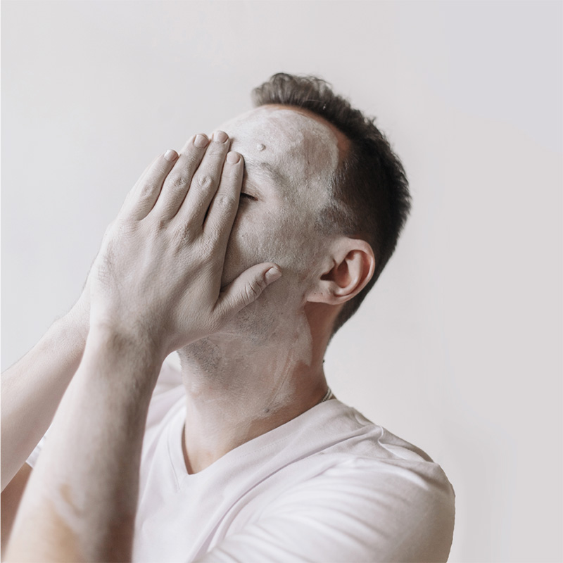
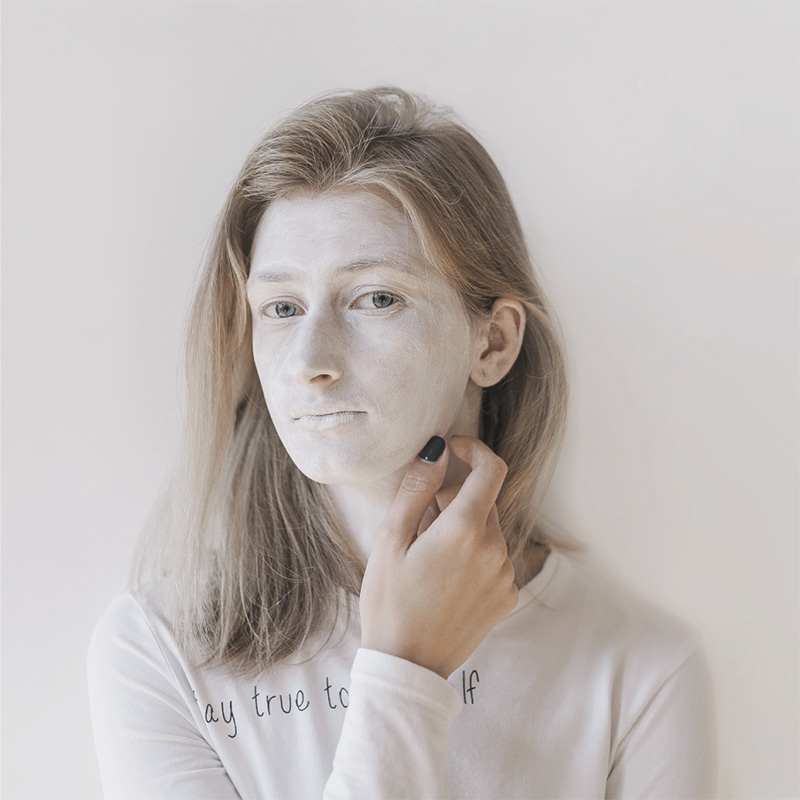
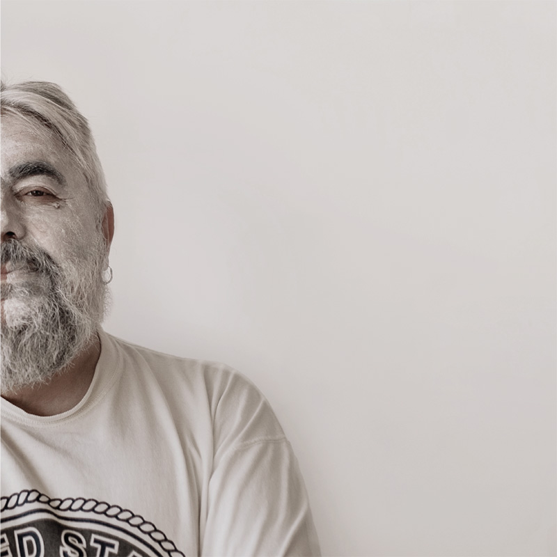
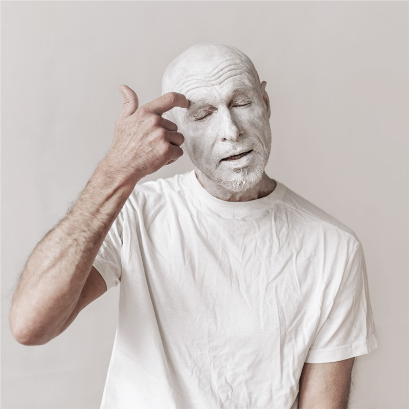

Urban Space Radio
Зараз в ефірі
Оновіть браузер

Понеділок
29 Жовтня
Slow Time з Тарасом Малим
Епізод 1 | Трохи менше любові
В гостях: Роман Малиновський і Курт Воннеґут

Вівторок
30 Жовтня
Пошепки з Анною Шийчук
Епізод 1 | Вдячність і злість

Середа
31 Жовтня
Вчора з Тарасом Прохаськом та Мохом
Епізод 1 | Історія пам’яті

Четвер
01 Листопада
50 відтінків музики з Юрієм Іздриком
Епізод 1 | Улюблені дуети

Вівторок
06 Листопада
Пошепки з Анною Шийчук
Епізод 2 | Свобода і залежність
Середа
07 Листопада
Вчора з Тарасом Прохаськом та Мохом
Епізод 2 | Розвиток мистецтва
В гостях: Анатолій Звіжиснький
Четвер
08 Листопада
50 відтінків музики з Юрієм Іздриком
Епізод 2 | Стінг. Початок
Понеділок
12 Листопада
Slow Time з Тарасом Малим
Епізод 2 | Чарльз Буковскі
В гостях: Мірек Боднар та Христина Михайлюк
Середа
14 Листопада
Вчора з Тарасом Прохаськом та Мохом
Епізод 3 | Становлення сучасної української літератури
В гостях: Юрій Іздрик
Четвер
15 Листопада
50 відтінків музики з Юрієм Іздриком
Епізод 3 | Музика і психоделіка
Понеділок
19 Листопада
Slow Time з Тарасом Малим
Епізод 3 | Річард Бротіґан та Джек Керуак
В гостях: Ольга Перехрест
Вівторок
20 Листопада
Пошепки з Анною Шийчук
Епізод 3 | Як ми завершуємо стосунки
Середа
19:00
21 Листопада
Вчора з Тарасом Прохаськом та Мохом
Епізод 4 | Як звучать 90-і?!
В гостях: Ярема Стецик
Четвер
19:00
22 Листопада
50 відтінків музики з Юрієм Іздриком
Епізод 4 | Забуті вініли